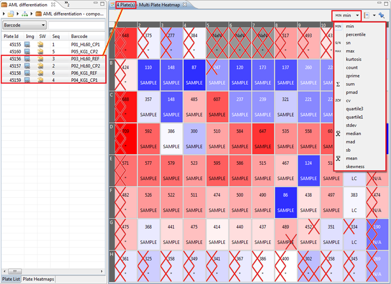

The Multiple Plate Quick Heatmap is a Quick Heatmap of multiple plates, aggregated using a statistical function.
To open the Multiple Plate Quick Heatmap, click Window > Show View > Other... > Other > Multiple Plate Quick Heatmap.
Then, select multiple plates and the heatmap will show their aggregated values per well.

The available statistical methods are: